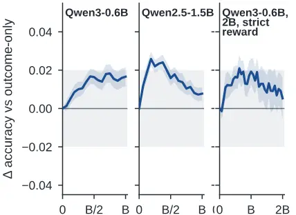
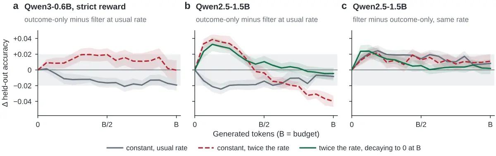

In one line: On six models of 0.6B to 4B trained with GRPO on MATH (paired seeds, mostly preregistered), a Monte-Carlo process reward that led by 1.5 points per update on Qwen2.5-1.5B (exploratory) trailed outcome-only GRPO by 14.3 points at equal generated tokens and 7.8 at equal GPU-hours (exploratory); choosing prompts with predicted success near 1/2 gained 1.7 and 0.8 points at equal tokens on Qwen3-0.6B and Qwen2.5-1.5B (no significant gain on the other four models), a lead that GRPO with twice the learning rate matched on Qwen3-0.6B.
How far to trust it: Believe the dense-reward reversal in this recipe: the deficit is large, in every seed, recurs on three Qwen3 sizes, GSM8K and longer completions, and follows from token arithmetic you can check (91% of the tokens are continuations that are never trained on). Do not stretch it to long reasoning at scale: models up to 4B, short completions, about 50 updates for the reward, one GPU type per time comparison. The prompt-selection gain is real but small and early: two of six models, about a fifth of the budget, mostly gone by twice the budget, and matched by a retuned learning rate on Qwen3-0.6B. The promised code and run records were not public on 16 November 2026. The evidence, judged.
A dense reward that scores each step by sampling continuations makes every GRPO update better, but spends most of its generated tokens on continuations it never trains on, so at the same tokens or GPU-hours it loses to plain outcome-only GRPO; spending one forward pass to choose which prompts to train on wins instead, a little, early (abstract and §1).
Fig. 1 · Each method minus outcome-only GRPO, on four yardsticks
Qwen2.5-1.5B-Instruct on MATH. Dense rewards: levels 4 and 5, 380-token completions (768 in the last step). Prompt filter: levels 3 to 5, 60 seeds. Bars are 95% paired intervals over seeds where the paper prints them; a row without a bar was not run on that yardstick.
You need: GRPO's group advantage, why a group whose completions are all right or all wrong gives no update, DAPO's dynamic sampling, and verifier failures during RL (RL for LLMs); the score-function estimator and why a baseline that depends only on the state leaves it unbiased (Policy gradients and actor-critic); paired comparisons over seeds, multiple comparisons and equivalence tests (Eval statistics). Process reward models as judges at inference time are a different use, owned by Test-time compute and reasoning.
New terms on this page
GRPO samples a group of G completions per prompt, gives each a 0/1 reward Rg from the verifier and an advantage Ag = (Rg − mean R) / (std R + ε), and multiplies every token's score (its log-probability gradient) by a credit (Eq. 1 and 2). Outcome-only GRPO gives every token of a completion the same credit, Ag, so a solution that sets up the problem correctly and slips at the last step is penalised for its good steps too. The mechanics of the group advantage are owned by RL for LLMs; what this paper adds is a precise statement of what that equal credit can and cannot do.
Because every token of completion g carries the same Ag, the update is Σg Ag qg, a weighted sum of each completion's summed score qg. Call the set of all such weighted sums V: every update that weights whole completions lies in it. A dense reward adds a token-level term, credit = Ag + wg,h, so its update can leave V; only the part outside V can, to first order, do better than some reweighting of whole completions (§2.1; Appendix I gives the exact condition).
The Monte-Carlo reward (after Math-Shepherd and VinePPO) cuts each completion at five fixed token positions into six segments and samples k continuations from each prefix; Fig. 2 runs it on one completion, step by step (§2.2). The value before the first segment is fixed at 0.5 and the value at the end is the completion's own reward, so the six credits always add up to R − 0.5 (Table 16).
Fig. 2 · One completion, step by step
The completion and its continuation outcomes are illustrative; the cut count, k, the fixed starting value, the credit rule, 91% and the update counts are the paper's (§2.2, Appendix C.1, C.3.2).
Two cheap checks make such a reward look worth using (§1). A gradient test asks, on a fixed batch, whether the reward's update points where an independent estimate of the gradient of expected accuracy points. A per-update comparison trains with and without the reward for the same number of updates. Neither counts what the reward costs: in generated tokens (the 91%), and in GPU time, though not in proportion, because the continuations are only generated and scored, never trained on, and an inference engine generates tokens in large batches more cheaply than a training step processes them.
The prompt filter spends compute the other way (§2.2). A group whose completions all succeed or all fail has zero advantage everywhere and produces no update, so several methods aim training at prompts with success near 1/2. The filter draws 24 candidates per iteration, predicts each one's success from the policy's hidden state at the end of the prompt (one prefill pass, no generated tokens), and trains on the 6 nearest 1/2 plus 2 at random. It is PCL's rule; the paper does not propose a new method, it tests existing ones at matched compute (§5).
Small models, many paired seeds. The gains the authors expected were about as large as the variation between seeds, so they trained six small models many times: Qwen2.5-1.5B-Instruct (completions up to 380 tokens), Qwen3 0.6B, 1.7B and 4B in non-thinking mode, and Llama-3.2 1B and 3B Instruct (768 tokens), on MATH problems with numeric answers (§2.3). Each iteration takes 8 prompts × 8 completions and one on-policy Adam step at learning rate 10−6, with no ratio clipping, no sample reuse and no KL penalty. In total, 1,668 runs and 1,468 GPU-hours, on a trainer reimplemented for this study. Configurations compared within a study share prompts and evaluation samples under each seed, so each seed gives one paired difference.
Two budgets. The token budget B counts every token generated during training, including continuations and the groups dynamic sampling discards, and a run stops when it has spent B. A preregistered rule sets B per model to what the k = 4 reward generates in 48 iterations (12.25M on Qwen2.5-1.5B), so even the most expensive reward makes about 50 updates. Training time counts every training stage (prompt scoring, generation, credit, the update, the weight sync), not evaluation or logging, and is compared only between runs of one study on one GPU type. Every comparison is also reported at equal updates.
Metric. Pass@1 over 8 samples at temperature 1 on 200 held-out numeric MATH problems, read at the first evaluation at or after B, with no checkpoint picking; differences are in percentage points.
Statistics. Each study wrote down its hypotheses, primary contrasts, Holm families and equivalence margin (±2 points, ±1 in four studies on Qwen2.5-1.5B) before its runs. Results are means with 95% paired-t intervals over seeds; each claim is labelled primary (preregistered, Holm-adjusted), secondary (preregistered, unadjusted) or exploratory (not preregistered); a crossed bootstrap over seeds and test problems checks every primary contrast (§2.3). How paired tests, Holm and TOST work is owned by Eval statistics.
Verifier. The default verifier credits the boxed answer, or the last number when nothing is boxed; the strict one credits only boxed answers. Runs on the default verifier can drift away from boxing, which can bias a comparison either way, so some studies train on the strict one (§2.3).
Gradient tests (§2.4). Alignment is the cosine between the parts outside V of a dense update and of an estimate ĥ of the gradient of expected accuracy from separately sampled continuations. Efficiency, (E⟨u, ĥ⟩)² / E‖u‖², also counts how noisy an update is: for a smooth objective it is proportional to the best expected gain of one SGD step along u. It is computed on 96 fixed batches at the initial policy, relative to outcome-only GRPO, per update and per generated token.
The gradient test favours it. In a separate equal-iteration study (Qwen2.5-1.5B fully fine-tuned at 10−5 for 32 iterations, greedy validation accuracy; Appendix G), the part of the Monte-Carlo reward's update outside V has a mean cosine of 0.84 with that of the reference gradient, on four full-parameter probes with disjoint rollouts. Two control rewards leave V just as much (the part outside V carries 0.86 to 0.95 of the norm for all three) but do not align: a PRIME-style implicit reward log πθ − log πref, at −0.01 ± 0.08, and the Monte-Carlo reward shuffled within each completion, at −0.01 ± 0.06. In the matched-compute recipe, the k = 4 reward is 1.56× [1.28, 2.03] as efficient as outcome-only GRPO per update, and with the same number of updates it leads by 1.5 [1.0, 2.1] points (exploratory; step 1 of Fig. 1).
Training does not follow, even at equal iterations. In the equal-iteration study outcome-only GRPO gains 5.6 [4.1, 7.1] points of greedy accuracy; adding the reward with a low weight (α = 0.25, 0.5 or 1) is equivalent to it within ±3 points over 14 paired seeds, and with α = 5 it loses 12.4 [8.7, 16.1] points (n = 8). Through that collapse its alignment with the reference stays at 0.969 to 1.000, while greedy accuracy falls from 25% to 12%, entropy rises from 0.21 to 0.58 (0.18 to 0.20 at low weight) and the KL from the initial policy reaches about 30 times that of the low-weight runs. The reward keeps pointing the right way; the failure looks like over-optimizing it (§3.1). On Qwen2.5-7B no dense-reward configuration in a 43-run sweep beat the outcome baseline's mean gain; SmolLM3-3B and a NuminaMath study point the same way, and only single-seed Phi-4 pilots are positive.
Per generated token it is far behind. At k = 4 the continuations take 91% of the tokens, so when the budget runs out the reward has made 50 updates and outcome-only GRPO 584 (Fig. 3, top). Its accuracy at B is 14.3 [12.7, 16.0] points lower (n = 5, Holm p = 5 × 10−5) and 14.9 [14.0, 15.8] lower on 12 fresh seeds. The deficit recurs on Qwen3 0.6B, 1.7B and 4B (8.0, 9.1 and 10.0 points, 3 seeds each), on GSM8K (9.8) and with 768-token completions (6.6, n = 8).
Per GPU-hour it is behind too, by less. With the same tokens, a k = 4 run takes 0.14 hours on an H200 and outcome-only GRPO 0.43. Outcome-only GRPO spends 61% of its time on updates; the reward spends 73% generating continuations, which the inference engine does in large batches (Fig. 3, bottom; Table 14). Stopped at the reward's training time, outcome-only GRPO still leads by 7.8 [6.8, 8.8] points, in all twelve seeds (exploratory). A comparison that counts only tokens overstates the loss; one that counts only updates hides it.
Cheaper rewards lose less, but still lose. Sampling noise in the continuations is only about 4% of the second moment of the k = 4 update, so fewer continuations should cost little in quality. A preregistered study on 12 fresh seeds: k = 1, still 70% of tokens on continuations, trails outcome-only GRPO by 6.8 [6.0, 7.6] and leads k = 4 by 8.1 [7.1, 9.0] (both Holm p < 10−8, every seed); k = 2 trails by 11.2. At their own training times k = 2 and k = 1 trail by 5.1 and 2.2 (exploratory).
Reusing the samples helps the reward, not the baseline. In three-seed pilots, four clipped optimizer steps per batch (VinePPO-style) raise the k = 4 reward by 7.7 points at matched tokens (Holm p = .007) but lower outcome-only GRPO by 5.9 (Appendix E). Training on the continuations themselves (after SPO-tree and TreeRL) was 6.4× as efficient per update but only 0.60× per token, below the preregistered bar of 0.8 for training it at 380 tokens.
Given as much training time as outcome-only GRPO, nothing gains (step 4 of Fig. 1). In the preregistered 768-token study, outcome-only GRPO needs Tc = 1.29 A100-hours to reach B; every variant trains past that. At Tc, k = 4 trails by 3.3 [2.4, 4.3] and continuation reuse by 5.2 [4.1, 6.3] in every seed (its updates, which include the continuations, take 78% of its time: 45 seconds per iteration against 6). The VinePPO-style variant trails by 1.1 [0.4, 1.7], equivalent within ±2 (TOST p = .005) and even at its own shorter time. The k = 1 reward's 1.1 [−0.5, +2.8] is neither significant nor shown equivalent; given still more time it reaches outcome-only GRPO's accuracy at B after 1.25 Tc on the mean curves (Appendix F).
Learned critics remove the continuations, and gain nothing. A ridge critic predicts each prefix's value from the hidden states, refit every iteration on earlier rollouts. On 24 fresh Qwen2.5-1.5B seeds both forms are equivalent to outcome-only GRPO within ±2 points (TOST, Holm p < 10−4): the TD form −0.4 [−1.2, +0.3], the baseline form +0.7 [0.2, 1.2] (Holm p = .016), a lead that appears only at the final evaluation. Fitting the critic adds 23 to 24% to training time, so at equal time both trail, by 1.2 and 0.7 (exploratory; §3.3). The critic is cheap but noisy: its squared error against the prefix value is 0.057, against 0.010 for the k = 4 estimate, where the value's own variance is 0.076 (C.1).
How far the efficiency extrapolation overestimates each reward's accuracy, averaged over the evaluations, with 95% intervals: the Monte-Carlo rewards on 12 seeds (exploratory, C.3.2), the critics on 24 fresh seeds (preregistered, C.3.3). Shaded: the prompt filter's gains at equal tokens.
Per token, it predicts the order. The k = 4 reward is 1.56× as efficient as outcome-only GRPO per update but only 0.145× [0.120, 0.190] per generated token. Per token the test ranks k = 1 (0.45×), k = 2 (0.27×) and k = 4 (0.15×) in the order training follows, an order and a deficit for every reward that were both preregistered and both held. All three are about equally efficient per update (1.55 to 1.63×), so the order simply follows their token costs; what the test adds is a size for each deficit.
But it overestimates every reward it rates. To turn efficiency into accuracy the authors use a heuristic, not a derivation: a reward with per-token efficiency e reaches after t tokens the accuracy outcome-only GRPO reaches after e·t. It predicts 35.9%, 31.9% and 27.5% at B for k = 1, 2, 4; the rewards reach 34.3%, 29.9% and 26.3% (exploratory). The critics are the case most favourable to dense rewards (per token they are 1.36× and 1.15× as efficient as outcome-only GRPO), and the extrapolation gives them leads of 2.0 and 0.9 points; they lead by 0.2 and 0.0, shortfalls that were preregistered (p < 10−5 each). Across all five rewards the overestimate is 0.8 to 1.8 points on average, every interval excluding zero (Fig. 4), as large as the gains the paper measures.
Why it misses: the test describes one SGD step, with the step size tuned to each update, at the initial policy; training takes hundreds of Adam steps at one fixed learning rate while the policy moves. Treat it as a ranking heuristic, not a certificate for a gain of a point or two.
Twelve settings (Table 8): each dot is the filter minus outcome-only GRPO at B with its 95% interval; blue where the interval lies above zero; rings mark the four settings with a preregistered prediction; grey band ±2. Labels: Qwen3 size and pool level, Qwen2.5-1.5B and Llama-3.2.
It gains on two of six models, and both gains replicate. On the level 3 to 5 pool, the critic filter raises accuracy at equal tokens by 1.7 [1.2, 2.1] points on Qwen3-0.6B over 54 seeds from four studies (higher in 42), including 1.2 [0.5, 1.9] in a preregistered replication on 24 fresh seeds (Holm p = .003), and by 0.8 [0.4, 1.1] on Qwen2.5-1.5B over 60 seeds, significant in each of three preregistered studies (12, 24 and 24 seeds). Qwen3-1.7B, Qwen3-4B and both Llama models show no significant gain on this pool (§4.1).
It carries over to unseen problems. On the 200 shared test problems the crossed bootstrap interval for the Qwen2.5-1.5B gain reached zero every time, so the last study on each model also scored the 1,543 numeric MATH test problems of levels 3 to 5 outside every evaluation set: +0.8 [0.5, 1.1] on Qwen2.5-1.5B and +1.1 [0.6, 1.5] on Qwen3-0.6B (Holm p < 10−4 each), and +1.1 and +1.3 on GSM8K, which neither configuration trains on (secondary).
It comes from which prompts are chosen. Drawing 24 candidates to train on 8 also moves through the prompt stream three times as fast. The control, random choice of 8 among the same 24, trails the filter by 1.7 [0.5, 2.9] on Qwen3-0.6B and by 1.0 and again 0.9 on Qwen2.5-1.5B (preregistered primary contrasts), and is itself equivalent to outcome-only GRPO within ±2 points on all three models tested.
Most of it survives the clock. Scoring the candidates costs a prefill pass, so filter runs take 9 to 14% longer to reach B; at equal training time the lead is 1.0 [0.6, 1.5] on Qwen3-0.6B and 0.5 [0.2, 0.8] on Qwen2.5-1.5B (exploratory), and on the seeds of the Qwen3-0.6B replication alone 0.4 [−0.1, +1.0].
Cheaper signals do less. A history filter close to GRESO (each prompt's last group reward, no forward pass) gains 0.6 [0.1, 1.1] on Qwen2.5-1.5B over 36 seeds, while the critic adds an early lead of 1.9 [1.6, 2.1] over it in the first half of the budget (secondary). Filtering by MATH difficulty level gains nothing (+0.2, equivalent to zero). DAPO's dynamic sampling loses 1.8 [0.8, 2.7] points, because the groups it generates and discards count toward the budget.
Not where it adds the most informative groups. The usual reason for training near 1/2, that only mixed-outcome groups have nonzero advantages, does not predict the gain: the filter raises the share of mixed groups by 8 to 19 points in every setting, but accuracy rises only in some, and not where the share rises most (Figure 4b).
It helps where the candidates are predicted to fail more often than not (Fig. 5). The authors formed this account after the fact from five settings, where the critic's mean predicted success over the 24 candidates separated the two that gained (0.42 and 0.40) from the rest (0.54 to 0.70). The mechanism: when the mean is below 1/2, keeping the candidates nearest 1/2 moves training toward easier prompts and away from all-wrong groups; above 1/2 it moves training toward harder prompts. Over all twelve settings the filter helps significantly in four of the five below 1/2 and in none of the seven others. Outcome-only GRPO's own training reward separates the settings the same way, so a short pilot run is enough to apply the rule; the base model's starting accuracy is not (Table 8).
Six preregistered tests, five held (Table 1). The two most direct keep model and pool fixed and only aim the filter at predicted success 0.25, harder than its candidates: on both models where the gain had replicated, it disappears (−2.8 and −1.0 against the filter aimed at 1/2). Changing the pool, the filter helps on Qwen3-1.7B with level 5 (+1.1, candidates 0.39; crossed interval reaches zero) and not on Qwen3-0.6B with levels 1 and 2 (0.79). Llama-3.2-3B (0.68) shows no gain, as predicted; Llama-3.2-1B (0.42) also shows none, the one failed prediction, so no gain has been shown outside the Qwen family. Four of the five confirmed predictions are of no gain, the more common outcome, so the two direct manipulations carry most of the weight (Appendix B).

Three of the ten panels of the paper's Figure 5 (accuracy as a fraction: 0.01 is one point; bands 95% intervals, grey band ±0.02). Vikash Singh et al., CC BY 4.0, cropped.

The paper's Figure 6: (a, b) outcome-only GRPO at each learning rate minus the filter at the usual constant 10−6; (c) the filter minus outcome-only GRPO at the same rate. Vikash Singh et al., CC BY 4.0.
A head start worth about a fifth of the budget. On Qwen2.5-1.5B the lead peaks at 2.6 [2.2, 3.0] points at 3B/16 and falls to 0.8 at B (Fig. 6). On both models the filter reaches outcome-only GRPO's final accuracy with 0.78 of the token budget, and with 0.85 and 0.87 of its training time once scoring is counted (exploratory; Table 11). On Qwen3-0.6B the gain also holds at pass@8 (0.9 [0.2, 1.7]) and at every test level; on Qwen2.5-1.5B it shrinks as k grows.
With longer training, outcome-only GRPO catches up. Trained to twice the budget on Qwen3-0.6B (strict verifier, 24 seeds), the filter leads by 1.9 [1.3, 2.6] at B but only 0.5 [−0.5, +1.6] at 2B, equivalent to zero within ±2 (TOST p = .004).
A retuned baseline gains about as much (Fig. 7). On Qwen3-0.6B, doubling outcome-only GRPO's constant learning rate raises it by 1.9 [0.5, 3.3] points (Holm p = .018), and the faster baseline minus the filter is −0.03 [−1.3, +1.2], equivalent within ±2. On Qwen2.5-1.5B a doubled constant rate lowers both configurations by about three points and the filter's gain holds (1.1); a rate decaying linearly from 2 × 10−6 to 0 at B keeps the fast early rise without that loss, and then outcome-only GRPO ends 0.5 [−0.3, +1.2] below the filter at the usual rate, while the filter's own gain under that schedule, 0.2 [−0.5, +0.9], is equivalent to zero within ±1. The paper's summary, "within half a point of it", rests on these two: matched on Qwen3-0.6B, half a point short on Qwen2.5-1.5B. No warmup, other peak rates or other schedules were tried, and none was tuned for the filter (Appendix B).
With the default verifier, which falls back to the last number when nothing is boxed, some runs gradually stopped boxing their answers: default-verifier accuracy exceeded strict-verifier accuracy by more than 10 points in up to 49 of a study's 408 evaluations, in either configuration (Appendix A). Retrained on the strict verifier, drift disappeared (0 of 2,196 evaluations) with no loss in accuracy: on Qwen3-4B with level 5, +0.8 [−1.9, +3.6] (non-inferior at −2, Holm p = .022), and 0 of 204 evaluations drifted against 16 of 204 (C.7.1). Why a lenient checker gets exploited is owned by RL for LLMs (verifier failures) and Reward Hacking; the lesson here is procedural: fix the verifier before comparing interventions, because drift can bias a comparison in either direction.
What holds up. The design is unusually careful for an RL training paper. Comparisons are paired by seed, with shared prompt streams and evaluation draws; studies were preregistered with Holm families and equivalence margins; the crossed bootstrap over seeds and problems checks every primary contrast; and claims carry their status (primary, secondary, exploratory). The headline dense-reward loss is large next to its noise (14.3 [12.7, 16.0], replicated at 14.9 on 12 fresh seeds, lower in every seed) and follows from arithmetic anyone can check: Table 13's hours and Table 14's per-stage seconds agree with the text, the S25 update counts and token shares give each configuration about the same tokens per update (20.5k to 22.6k), and 21 of 21 derived numbers recompute (The paper's numbers, rebuilt). The prompt-selection gain replicated on fresh seeds and on 1,543 unseen problems, and random choice among the same candidates rules out the faster pass through the stream. Many of the limits below are the authors' own (Appendix B), which counts in their favour.
Where to be careful.
Verdict. Believe the main lesson: a per-update or single-batch win is not evidence that a training intervention pays, and in this recipe the Monte-Carlo process reward loses by a wide margin once its tokens or its GPU-hours are counted. Read the dense-reward result as a statement about this regime (small models, short completions, tens to hundreds of updates), not about process rewards at scale. Read the prompt-selection result as a real but small head start on two Qwen models that a better-tuned baseline largely erases.
The contribution to adopt is the protocol, and it needs no new code: give every intervention the same budget of generated tokens (counting continuations, discarded groups and any extra rollouts), report accuracy at equal GPU-hours on one GPU type and at equal updates, pair configurations by seed with shared prompts and evaluation draws, add a control for each side effect (random choice among the same candidates, a retuned baseline learning rate, a strict verifier), and replicate on fresh seeds and another model. For prompt selection, a short outcome-only pilot tells you whether its training reward sits below 1/2, the case where the filter helped; a cheap history filter got most of the gain on Qwen2.5-1.5B. For dense rewards in a short-completion GRPO recipe like this one, the evidence says to spend the tokens on more outcome-only updates instead.
Cost of the evidence: 1,668 runs, 1,468 GPU-hours, one GPU per run (H200, except 105 GPU-hours of A100 for the 768-token study and 22 for task studies). A Qwen2.5-1.5B outcome-only run to B takes about 0.43 H200-hours (26 minutes) of training time; the filter adds 9 to 14%, the critics 23 to 24%.
Scope stated by the authors: numeric-answer MATH (and GSM8K as a transfer test), evaluation sets of 200 problems, models up to 4B, six segments with a constant dense weight, short horizons; process rewards used to rank or search at inference time are a separate use the paper does not cover.
Beyond the paper.
Process rewards and tree-structured rollouts are a common proposal for better credit assignment in RLVR, usually argued per update or per training step. This paper's point is about the yardstick: an intervention that spends compute somewhere other than the update has to be charged for it, in tokens and in GPU time, which rank methods differently because generation is cheap per token and training is not. The same accounting applies to anything that generates samples it does not train on: dynamic sampling's discarded groups (which lost 1.8 points here), best-of-n filtering, value rollouts, verifier calls. DeepSeekMath introduced GRPO and process-supervised GRPO; DeepSeek-R1 lists a process reward model among its unsuccessful attempts for different reasons (hard-to-judge steps, reward hacking, retraining cost); Fair Cast is another recent paper on the same small-Qwen GRPO setting, about how the sampler's weights lag the trainer's.
The tables that carry the argument, transcribed from the arXiv HTML with the printed precision (src/mk_tables.py), and every derived number this page quotes recomputed (src/recompute.py). Accuracy differences are in points (the paper prints fractions: 0.01 is one point).
| Method | Model, pool | n | Δ points [95% CI] | Interval | Test |
|---|
Table 3 and Table 4: configuration minus outcome-only GRPO on the same seeds at the first evaluation at or after B, unless the row says otherwise. The bar draws the interval on a ±4-point scale (±16 for the dense-reward block), blue above zero, orange below, grey band ±2. "Holm" marks a preregistered primary contrast; "estimate" pools seeds of several studies.
| Configuration | Base | n | Equal tokens | Equal time [95% CI] | Hours to B |
|---|
Table 13: Qwen2.5-1.5B, H200 GPUs; equal-time contrasts are exploratory reanalyses of preregistered runs.
| Configuration | Select | Generate | Credit | Update | Total (s) | Not in a stage |
|---|
Table 14: mean seconds per run before the evaluation at B. The Monte-Carlo continuations are generated in the credit stage. The last column, added here, is the total minus the four stages: the weight copy to the generation engine.
| Configuration | At Tc (primary) | Holm p | Lower | Equal tokens | Hours to B |
|---|
Table 15: 768-token completions, strict reward, 8 seeds, A100 GPUs; Tc is outcome-only GRPO's training time at B.
| Setting | n | Candidates | Training reward, filter | Training reward, outcome-only | Start | Filter − outcome |
|---|
Table 8 (exploratory): the critic's mean predicted success of the 24 candidates (range over seeds); training reward over the iterations before B; start is outcome-only GRPO's test accuracy before training.
| Setting | Candidates | Predicted | Result (points) |
|---|
Table 1: a, the gain on levels 1 and 2 minus the gain on levels 3 to 5; b, the filter aimed at 0.25 minus the filter aimed at 1/2.
| Setting (n) | Target | Share of tokens | Share of time |
|---|
Table 11 (exploratory): 1 means no saving; n.r., not reached within the run.
| Check | Where | Paper | Recomputed |
|---|
Every link opens in a new tab. Reading time of the resources below: 4h 00m.
arXiv preprint, the paper itself; the HTML version has the anchors this page links to. abstract page, PDF.
(1h 30m)
Announced in the paper as the trainer, the preregistrations and the run records. On 16 November 2026 the repository held only a README saying the code will be available soon (one commit, 11 November 2026), so nothing on this page could be checked against code or run records.
(5 min)
Kazemnejad et al., arXiv 2410.01679: the Monte-Carlo value estimate this paper adapts (9 rollouts at every reasoning step, PPO with a KL penalty, models fine-tuned on the task); it reports reaching PPO's peak accuracy in up to 3x less wall-clock time, in a different recipe from this paper's.
(45 min)
Wang et al., arXiv 2312.08935: step labels from the success rate of sampled completions, the other source of the Monte-Carlo reward.
(30 min)
Yu et al., arXiv 2503.14476: dynamic sampling, which throws away all-correct and all-wrong groups after generating them; here those discarded groups count toward the budget, and it loses 1.8 points.
(40 min)
Zheng et al., arXiv 2506.02177: skips prompts whose recent groups were uniform, before generating; this paper's history filter is close to it.
(30 min)
GRPO's paper, the algorithm every run here uses, and the process-supervised GRPO that collapsed here with a frozen PRM (Appendix E).
the same small-Qwen GRPO setting at learning rate 10⁻⁶; this paper keeps fp32 master weights for the same reason (with pure bf16 weights, 87% of parameters did not change after one step in its check).
the Qwen3 0.6B, 1.7B and 4B models in non-thinking mode.
outcome-only RL with a rule verifier at scale; R1 lists a process reward model among its unsuccessful attempts (steps hard to judge, reward hacking, retraining cost), a different argument from this paper's cost in tokens.
owns GRPO, the group advantage, uniform groups, DAPO's dynamic sampling and verifier failures; this page links there instead of re-teaching them.
where RLVR sits among post-training methods.
paired comparisons, seed variance, multiple comparisons and equivalence, the statistics this paper's protocol is built on.
owns process reward models as selectors at inference time, a use this paper does not test.
the score-function estimator and baselines behind the span argument and the critic's baseline form.
This page is one row of the Papers database; its properties (Paper, Takeaway, Topics, Year) live there.